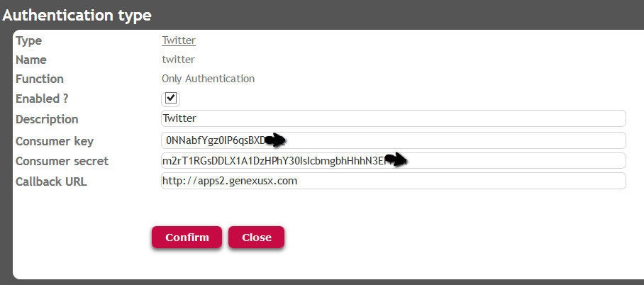
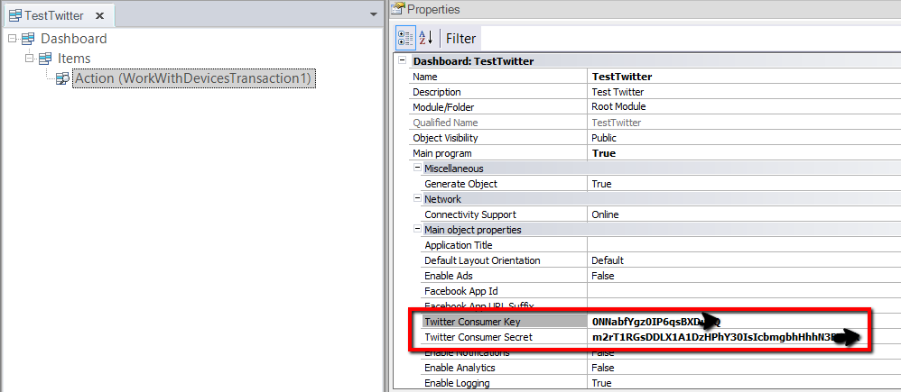
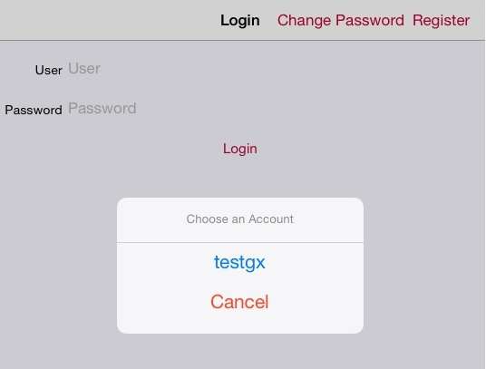

In IOS platform the GAM Twitter Authentication Type is performed using the credentials of the user in the device. That is, the login is done using the Twitter account of the user in the device. These properties are available for each main SD object, under "Main object properties". ValuesThe Twitter Consumer Key and Twitter Consumer Secret values have to be taken from the configuration of the Twitter Application in Twitter developers site. See GAM Twitter Authentication Type for details. The values for these properties specified in the main SD object have to be the same of those configured in the GAM Authentication type. ExampleFirstly you need to get the Consumer Key and Consumer Secret values in the Twitter developers site, and configure the GAM Authentication type:  Secondly, configure the main SD object with the same values for Twitter Consumer Key and Twitter Consumer Secret properties:  Afterwards, for IOS platforms, the Twitter login will be done using the local Twitter account. If the twiiter account exists, the user will be asked for permissions to access this account.  On the other hand, if the account does not exist, he will be prompted to define an account in the device. The message is "No accounts. Please configure a twitter account in settings.app". NoteIf you do not configure any of these properties (Consumer Key and Consumer Secret), you'll get the following error message: CRASH: You must enter your consumer key. AvailabilityAs of GeneXus Evolution 3, it is available for IOS using Net and Ruby generator. In other cases, the Twitter login is done in the Twitter web site. Scope
|
| Backlinks |
| GAM Twitter Authentication Type |